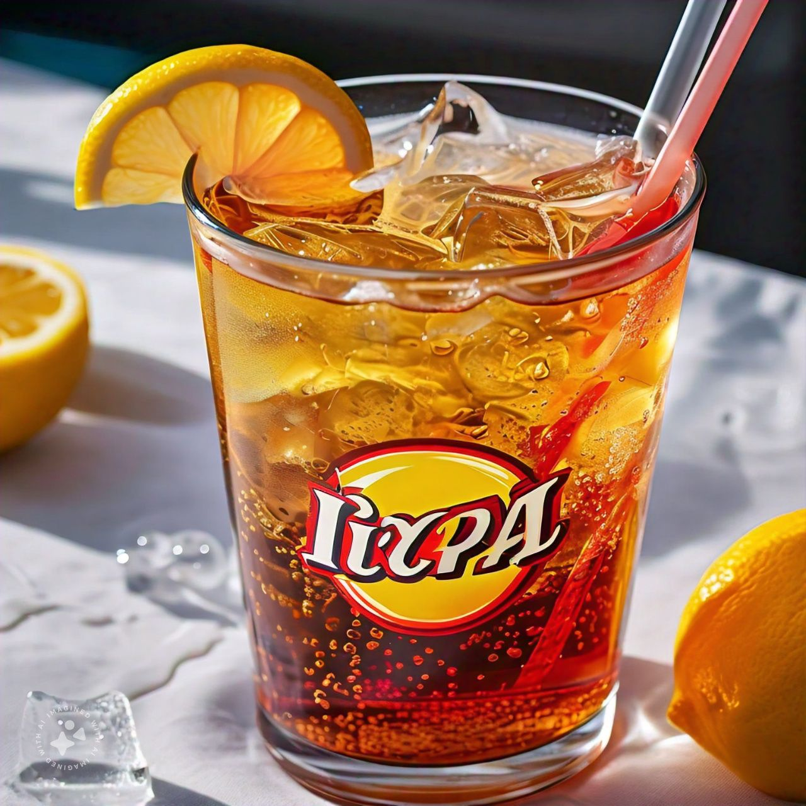

1. Dessert Cake with Ice Cream Topping
A stunning cake topped with a scoop of creamy ice cream, melting just perfectly to complement the rich, moist layers beneath. A dessert that looks as good as it tastes!
2. Homemade Pie
Freshly baked and golden, this homemade pie has been sliced to reveal a perfectly balanced filling. Comforting, warm, and made with love, this pie is the essence of homemade goodness.
3. Orange Juice
Bright, refreshing, and zesty, this freshly squeezed orange juice is a burst of sunshine in a glass. Ideal for any meal or as a thirst-quenching treat.
4. Colorful Macaroons
A rainbow of macaroons in delightful shades of blue, purple, pink, yellow, and orange. These delicate, bite-sized treats are as gorgeous to look at as they are delicious to eat.
5. Pasta with Meatballs
A hearty plate of perfectly cooked pasta paired with juicy, flavorful meatballs in a rich sauce. This is comfort food at its finest, promising satisfaction in every bite.

6. Pastry Pie
Flaky and golden, this pastry pie is a work of art, baked to perfection with layers that are crisp on the outside and tender on the inside. A true indulgence for pastry lovers.
7. Red Wine Glass
A glass of deep red wine, rich and aromatic, adding elegance and sophistication to any meal. Perfect for savoring slowly with every sip.
8. Soft Drink
A chilled, fizzy soft drink, bubbling with freshness and ready to cool you down with each sip. The perfect companion to your meal.
